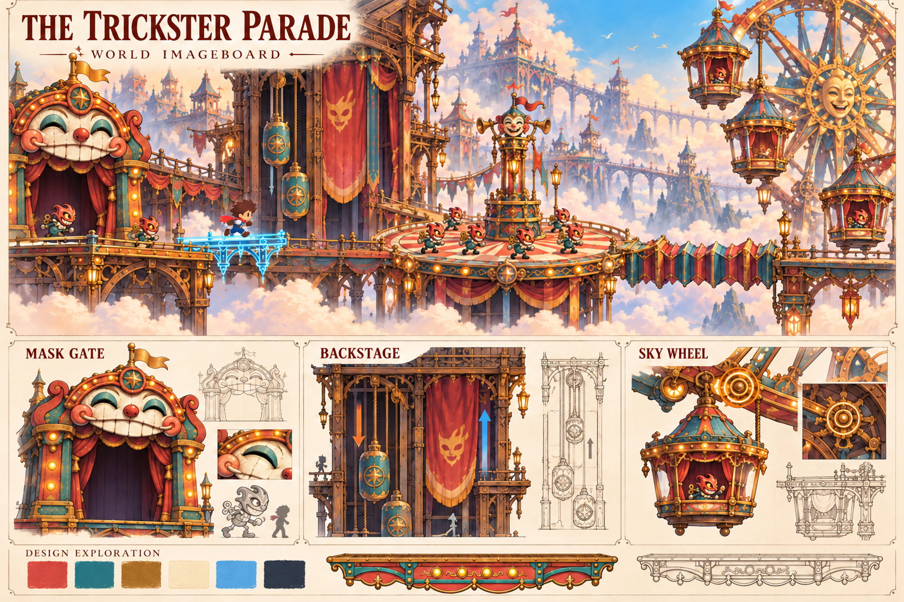
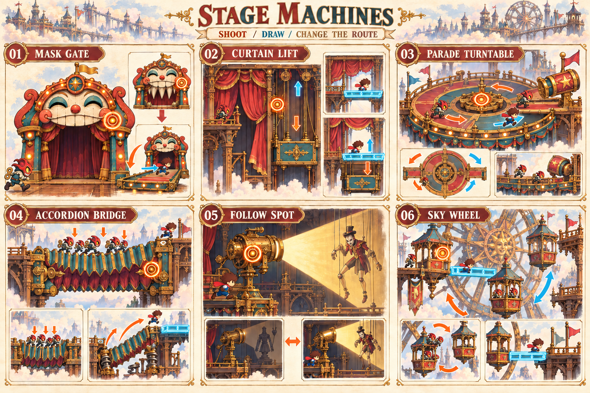
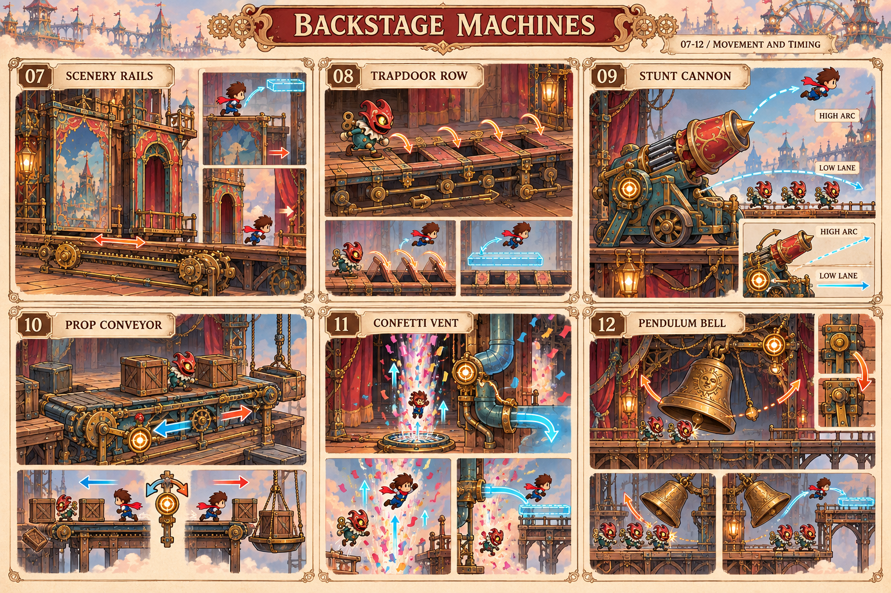
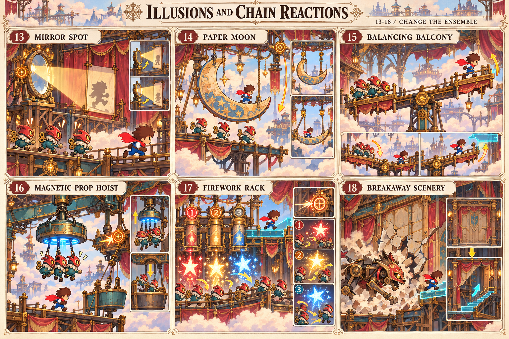
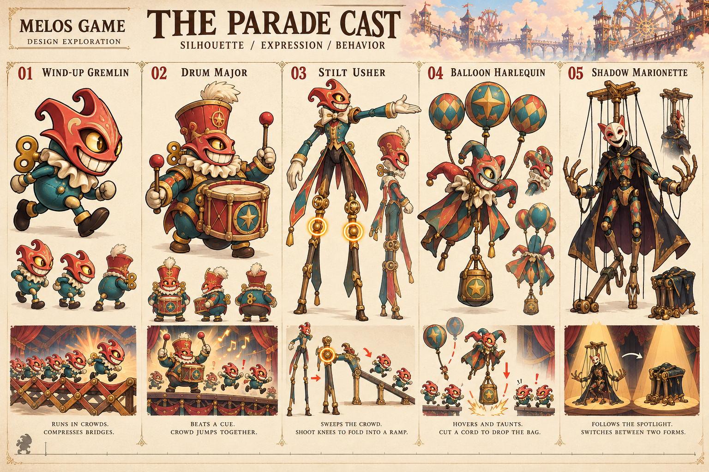
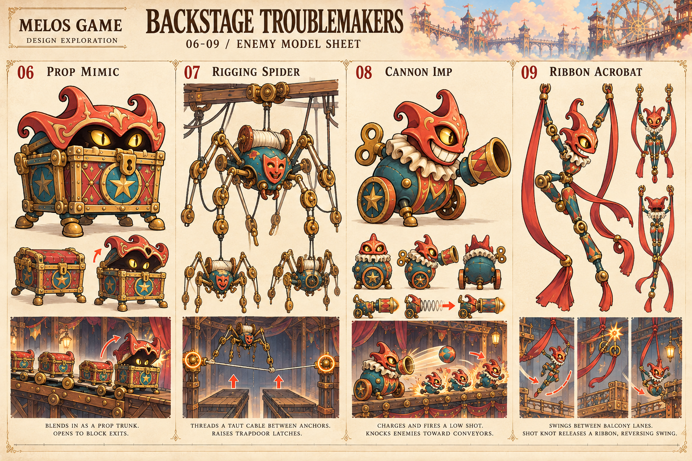
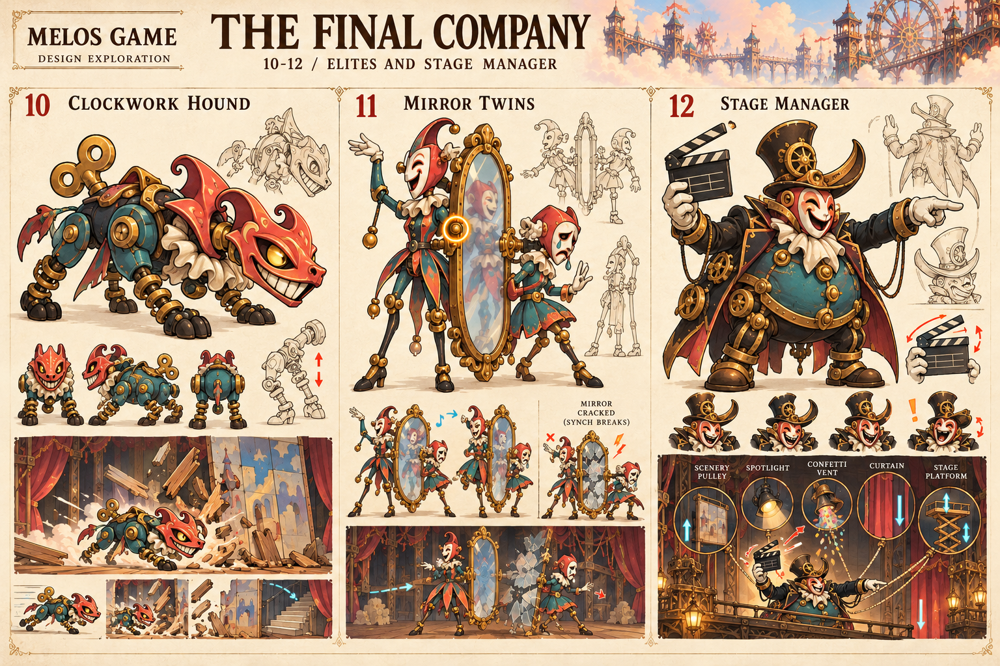
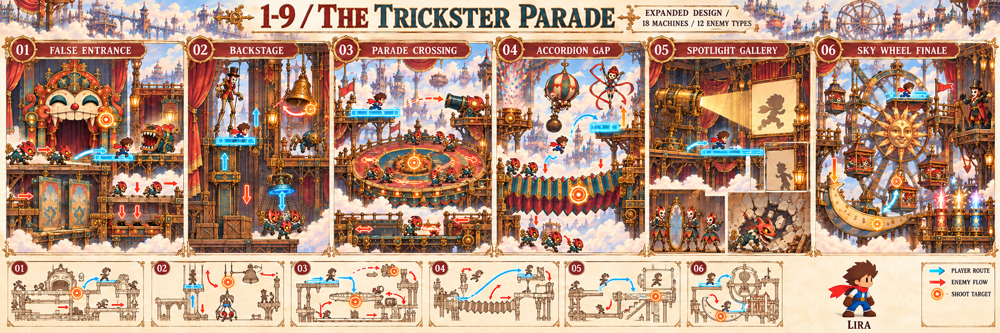

MASK GATE
仮面門頬の留め金を撃つと下顎が橋になる。敵も橋を渡るので、開く時刻を選ぶ。
主人公は元のLiraのまま。劇場の設定を、18種のギミックと12種の敵へ広げました。装置を動かす、群れを運ぶ、敵の行動を利用する、という異なる突破方法を組み合わせます。
00 / CANONICAL CHARACTER
茶色の髪、赤いマフラー、白い袖と青い服、茶色の手袋とブーツ。下の8ポーズは現在のゲームが使うPNGの原本です。生成画でもこの顔・髪・服装を引き継ぎます。
01 / WORLD IMAGEBOARD
動画の美術を継承し、主人公の姿を元のLiraに修正しました。珊瑚色の木、青緑の金属、真鍮、仮面とぜんまいが共通の素材です。

画像を選ぶと原寸で開きます
02 / 18 STAGE MACHINES
基本装置6種、移動とタイミング6種、錯覚と連鎖6種。琥珀色の同心円は射撃できる場所、青い描線は相棒の足場です。操作の結果は敵にも主人公にも作用します。

画像を選ぶと原寸で開きます
頬の留め金を撃つと下顎が橋になる。敵も橋を渡るので、開く時刻を選ぶ。
幕と対重が反対に動き、上下の通路を切り替える。相棒が落下先を支える。
クラッチを撃つと群れの出口が変わる。鼓笛隊長の跳躍で上の通路にも敵が来る。
敵の重みを貯め、ばねを解放して主人公ごと跳ばす。圧縮量と着地点を選ぶ。
照明の向きを変えると、人形が敵と固い小道具の姿を切り替える。
反対側のゴンドラに乗る群れが釣り合いを変える。ブレーキと渡り足場を組み合わせる。

画像を選ぶと原寸で開きます
背景の壁が横へ動き、窓や足場の位置が変わる。上に乗るか、開いた下の通路へ進む。
敵が踏むと隣の床へ開閉が連鎖する。順番を読んで跳び、下の受け足場で救う。
射出角を低い通路と高い弧へ切り替える。主人公と敵の射出先を分ける。
回転方向を変え、箱と敵を落とし穴または対重の皿へ運ぶ。
噴流が空中の主人公と敵を押し上げる。描いた壁で風向きを曲げる。
振り子が群れを別の高さへ押す。留め金を撃って、通過する時刻に位相を合わせる。

画像を選ぶと原寸で開きます
スクリーンへ主人公の影を投影し、敵を誘導する。実体の主人公は別の通路を進む。
吊られた三日月の小道具を下ろし、曲線の橋として渡る。
片端へ群れを乗せると、反対側の主人公が持ち上がる。二つの角度で固定できる。
金属の敵を持ち上げ、群れを対重の皿へ放す。主人公は磁力の対象にならない。
予告灯と導火線に沿って三段階で作動する。次の花火までに逃げ道を描く。
猟犬を誘導して偽の壁へ突進させると、裏の階段が現れる。
03 / 12 ENEMY TYPES
追跡する群れ、指揮役、高所の妨害役、装置を動かす舞台係、通路を破壊する敵、演目を切り替える舞台監督。姿と行動をセットで示します。鏡の双子は二体一組で一種類です。

画像を選ぶと原寸で開きます
既存の小鬼。拡張案では群れの重さが装置を動かす。
ばちの振り上げを予告に、小鬼を一斉に跳ばせる。
上の通路を掃く。膝を撃つと長い脚が一時的な斜面になる。
風船のひもを撃つと重りが落ちる。群れと橋へ作用する。
照明の中で動く敵になり、暗いときは固い小道具になる。

画像を選ぶと原寸で開きます
搬送できる箱に紛れ、出口で蓋を開いて進路を塞ぐ。
舞台の支点間へ索を張り、連続開閉床の留め金を動かす。
ぜんまいの溜めを予告に低い弾を放ち、群れを搬送ベルトへ押し出す。
二本の布で上下の通路を横断する。結び目を撃つと軌道が逆になる。

画像を選ぶと原寸で開きます
予告して突進し、書き割りを壊す。追跡を新しい通路の発見へ利用する。
鏡で動きが連動する二体一組。鏡を壊すと同期が外れる。種類数では一種類と数える。
カチンコを大きく振り上げて予告し、幕・照明・吊り装置の状態を切り替える。
04 / EXPANDED STAGE MAP
各区画の主役装置1つに補助装置2つを組み合わせた空間案です。マップの青い経路を走る人物は元のLira。種類の正確な対応は下の区画選択で確認できます。

画像を選ぶと原寸で開きます
A01 仮面門 / A07 舞台レール / A08 連続開閉床
E01 ぜんまい小鬼 / E06 小道具の擬態箱
主人公が口を避け、相棒が橋を開く。動く壁の上を通るか、下の床を順に跳ぶ。
運べる箱が出口で敵に変わる。描いた上の足場へ逃げ、群れを先に流す。
拡張マップは空間構成のイメージです。全18種を一度に操作させる想定ではなく、区画ごとに組み合わせます。新しい挙動は設計案で、ゲームへの実装は次の段階です。
05 / CURRENT IMPLEMENTATION
現在の1−9は口の門2基、ハンマー2基、崩れる床3枚、昇降床2枚、小鬼72体。下の図は現在のソースの座標から作成したものです。